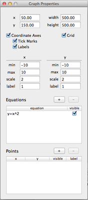

The Properties Panel allows you to configure the worksheet elements that you have incorporated in your worksheet. When you select different worksheet elements the Properties Panel will change depending on what is currently selected.
Properties Panel

The Properties Panel with graph selected
-
Properties Panel with Graph SelectedWhen a graph is selected the user has the options of changing several different configurations on the currently selected graphs. The optional settings include
- Points in the graph
- Equations
- Grid, grid scale, and tick marks
- Maximum and minimum values of x and y axes
Properties Panel with Line Selected

The Properties Panel with line selected
-
The Properties Panel allows the user to change the location, width and thickness of a line when a line is selected.